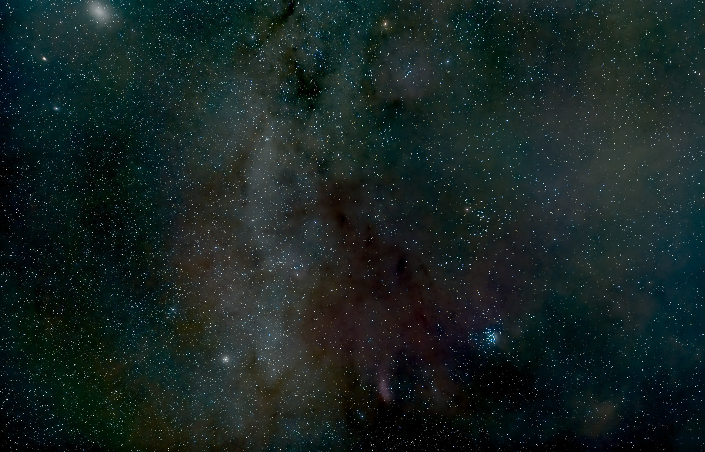
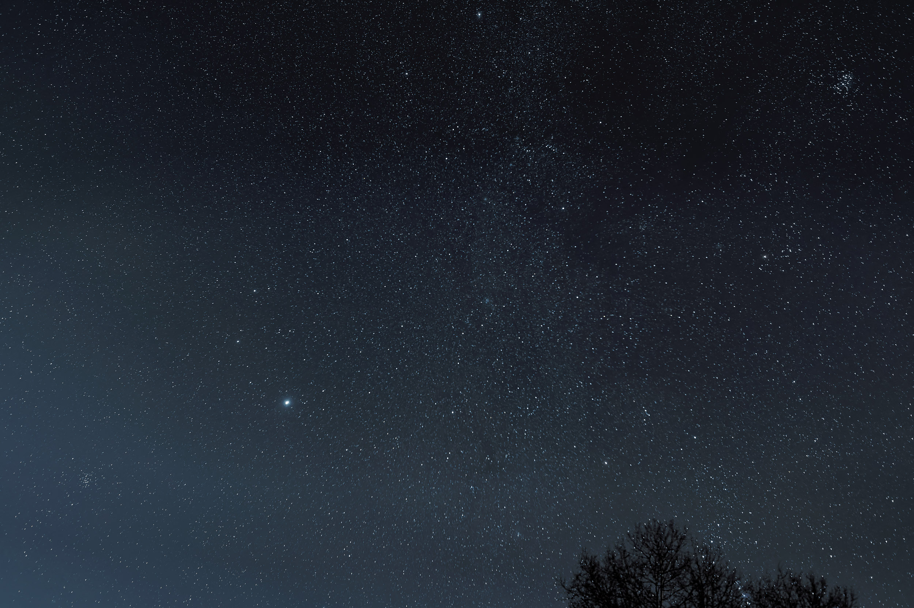
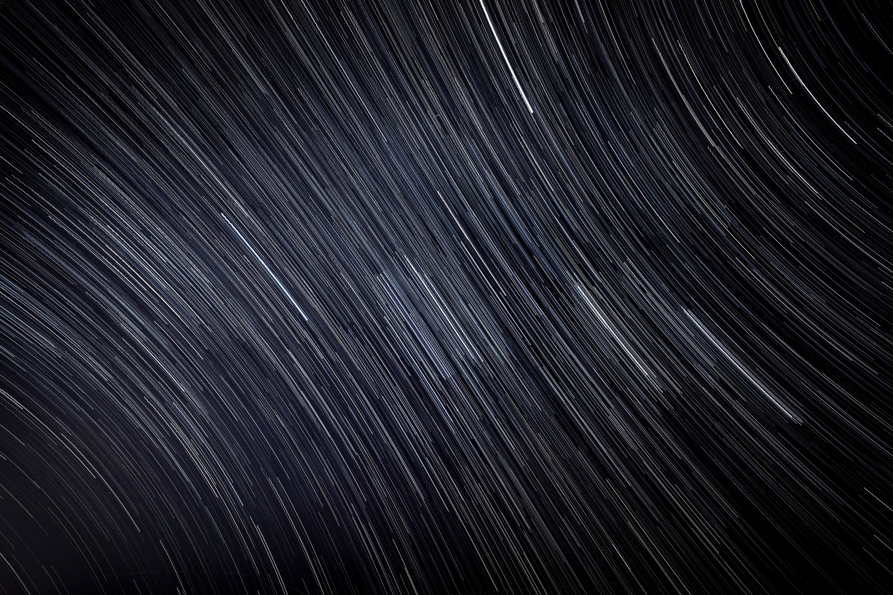
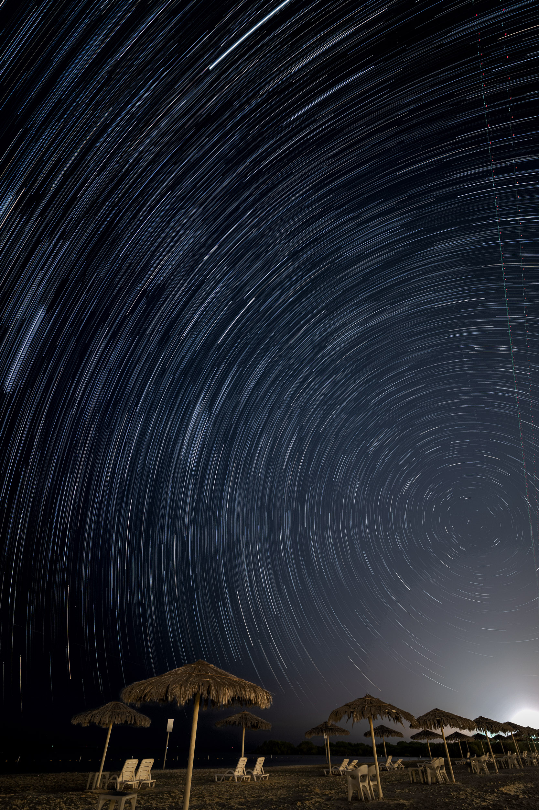
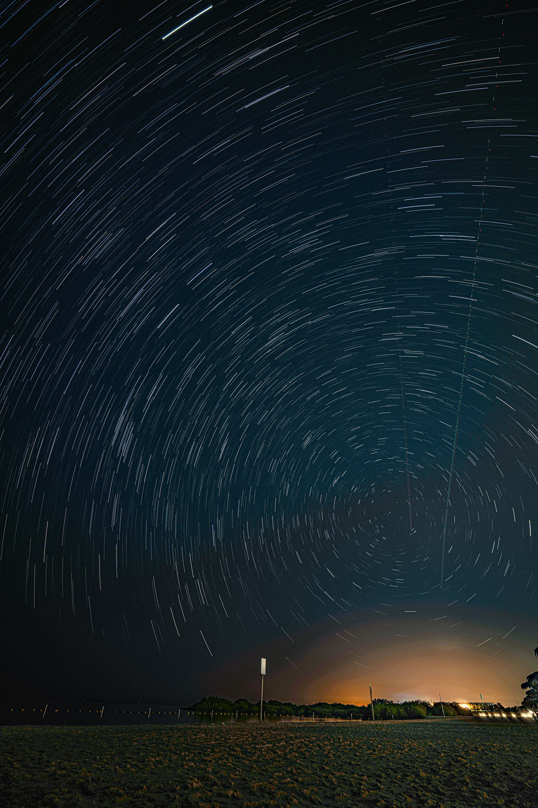

Night Sky near Trisching/Bavaria (Pleiades, California nebula, Mirfak, Andromeda galaxy)
Night Sky near Trisching/Bavaria
Star trails (North Beach, KAUST)
Star trails (North Beach, KAUST)
Star trails (North Beach, KAUST)